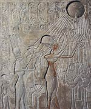

Атон ( "диск сонця"), в єгипетській міфології бог - уособлення сонячного диска. Розквіт культу цього бога відноситься до часу царювання Аменхотепа IV (1368 - 1348 роки до нашої ери). На початку його правління Атон виступав як втілення всіх головних богів сонця. Потім Аменхотеп IV оголосив Атона єдиним богом всього Єгипту, заборонивши поклоніння іншим богам. Він змінив своє ім'я Аменхотеп ( "Амон задоволений") на Ехнатон ( "угодний Атону" або "корисний Атону"). Верховним жерцем бога став сам фараон, який вважав себе його сином. На шостому році правління Ехнатон переносить столицю країни з Фів, центру опозиційно налаштованого жрецтва Амона, в заснований ним на землі, не присвяченій ніякому іншому божеству, «великий зачаруванням, приємний красою для очей» місто Ахетатон.
Аменхотеп поклявся разом з Нефертіті ніколи не залишати столиці, оголошеної священної обителлю Атона. Незважаючи на те що на плитах, які відзначають кордону Ахетатона, згадується ряд єгипетських божеств на чолі з Амоном, незабаром забороняється культ Амона, його дружини Мут і їх сина Хонсу (фиванская тріада богів). Близько 1356 року до нашої ери Атон остаточно проголошується єдиним богом, і незабаром починаються переслідування шанування всіх інших богів і культів, припиняється будівництво храмів, викорінюються самі слова «бог» і «боги» - навіть Атон іменується не інакше як «володар».
Ехнатон був навіть автором гімну Атону. Гімн знайдений на стінах гробниці наближеного фараона Ехнатона, Ай, який сам став фараоном на короткий час після смерті Ехнатона. У його правління культ Атона ще підтримувався, але вже при Тутанхамоне і Хоремхебе були повернуті старі культи, а релігійна реформа Ехнатона була повністю скасована. Але, мабуть, культ Атона при Ехнатоні привів до розвитку монотеїстичних тенденцій, які простежуються і в культі Амона-Ра в XIV-XII століттях до нашої ери.
Перша письмова згадка про Атоне зустрічається в «Повісті про Сінуха» (XII династія), де описується як померлий фараон, сходячи на небеса, зливається з сонячним диском, його променями. Атон вважався благим богом - творцем і захисником миру і всього живого, зображувався у вигляді сонячного диска з променями, які закінчувалися кистями рук, що тримають знак життя анх, символ того, що життя людям, тваринам і рослинам дана Атоном. Вважалося, що бог-сонце присутній в кожному предметі і живу істоту.